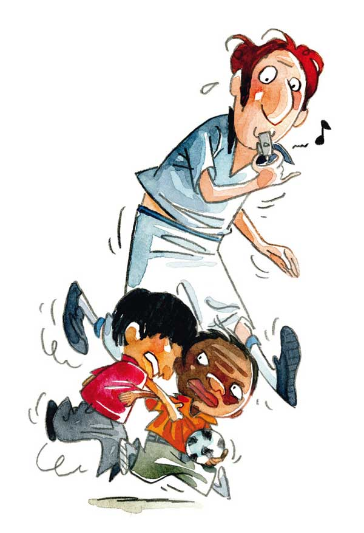

«Pour sortir de l’agir, il faut pouvoir dire…»


« L’inverse du jeu n’est pas le sérieux, mais la réalité »
Jouer, pour l’enfant, c’est aussi important que manger ou dormir…. Si l’enfant peut mourir physiquement s’il ne reçoit pas à manger ou s’il est privé de sommeil pendant de longues périodes, il peut aussi mourir psychiquement s’il ne joue pas. Vivre pour un enfant revient à jouer.
Jouer pour apprivoiser ses peurs, jouer pour comprendre le monde, imaginer son avenir, pour apprendre à créer, à vivre ensemble,... L’enfant a un besoin infini d’exprimer son monde intérieur, de faire revivre sa famille, d’être acteur de sa vie pour grandir. Le jeu est un support d’apprentissage inestimable (développement de capacités motrices, intellectuelles telles que l’inhibition, la mémoire,...). Il sert aussi de support social en stimulant l’échange, le partage, la découverte mutuelle, l’apprentissage des règles de la vie en groupe,...
Quand les enfants n’ont pas été accompagnés dans le jeu, quand ils ne peuvent pas exprimer leurs pulsions, émotions, ressentis, les transformer à travers cet outil, leur violence s’exprime alors ailleurs, à travers des actes. Ces enfants sont emportés dans des mouvements dépressifs ou agressifs.
A vous de jouer
Bonne nouvelle : pour l’enfant, tout peut devenir prétexte à jouer. Par exemple, avec le tout-petit, lui proposer des objets (bouteilles en plastique,…) peut suffire pour qu’il soit captivé de longues minutes. Cela peut également être des jeux de ‘beuh coucou’, de chansons, de marionnettes. Le corps est également un support de jeux considérable : chatouilles, ‘danse’,... Pour l’enfant plus grand, il peut s’agir de jeux comme le cache-cache, le faire semblant (papa maman,…), les jeux de société simples,…Accompagner l’enfant dans ces premiers jeux, l’inciter à jouer, lui faire découvrir ce plaisir est important.
Souvent, les enfants difficiles rencontrent des difficultés à jouer. Ils ont du mal à faire semblant, à imaginer, à créer…On peut les y aider en leur offrant un soutien durant ces jeux : créer des albums, imaginer une histoire ensemble, jouer avec eux à des jeux de faire semblant (vétérinaire, école,…),...
Même si leur proposer des jeux de société, qui demandent souvent patience et concentration, paraît contre-intuitif, cela peut s’avérer être une bonne idée. Jouer quelques minutes par jour à des jeux dont les règles sont simples, dont les parties sont courtes peut leur apporter beaucoup. Ils vivent des expériences de réussite, sont félicités, ils renouent avec le plaisir d'être ensemble, et peuvent aussi apprendre à rater sans que cela n’ait de conséquence (pas de bulletin,…). Les jeux de société aident également à développer la concentration, l’inhibition, la planification, la stratégie,…
Jouer est aussi important pour les grands enfants, les adolescents et même pour les adultes ! Et il ne faut pas toujours penser à un objectif pédagogique, ce qui importe quand on joue c’est d’y prendre du plaisir ! Alors à vous de jouer !
Découvrez la campagne "Jeu t'aime"
Les livres ont véritablement des pouvoirs magiques sur les enfants. Les histoires sont souvent de belles métaphores de ce qu’ils peuvent vivre au quotidien, elles permettent d’élaborer, de se représenter ses émotions, ses pulsions,… Les livres permettent d’aborder des thématiques qui questionnent les enfants, ou qui sont liées à des difficultés qu’ils rencontrent, sans que cela ne soit ni angoissant ni culpabilisant.
A travers les livres, les enfants découvrent d’autres manières de penser, de vivre. Ils apprennent à décoder les émotions des autres, à en comprendre les causes et les conséquences. Cela développe leur capacité de se mettre à la place d’autrui, la capacité d’empathie. Ils permettent de socialiser les enfants au monde qui les entoure. Grâce à la lecture, les enfants renforcent leur langage, ils comprennent mieux ce que le monde extérieur leur transmet. Ils peuvent mieux exprimer leur vécu, le verbaliser. Ils passent petit à petit de l’agir au dire.
Sans oublier que le livre et les histoires racontées sont, pour les enfants, une porte d’entrée sur leur imaginaire, ils permettent de vivre des moments hors du temps, des tracas quotidiens, et de partager des moments de douceur avec leur conteur. De leur côté, les parents découvrent comment leurs enfants apprivoisent peurs, angoisses en écoutant 36.000 fois la même TERRIFIANTE histoire. C’est leur présence calme, leurs intonations changeantes, leur voix... qui font toute la différence par rapport à un dessin animé.
Lire
Aimer lire, ca s’apprend. Que cela soit en leur donnant des livres, en leur racontant des histoires, en écoutant avec eux des histoires enregistrées, en les accompagnant à des lectures de contes, leur donner l’envie et le goût de lire est important. Quand l’enfant est petit, l’histoire n’a pas besoin d’être lue mais peut simplement être racontée en fonction de ses capacités de compréhension.
Souvent, à notre grand étonnement, les enfants adorent qu’on leur raconte la même histoire encore et encore. En fait, c’est à travers la répétition qu’ils s’approprient l’histoire, qu’ils la comprennent de mieux en mieux, qu’ils la font leur et par la suite qu’ils la racontent eux-mêmes.

Le moment de lecture peut également être une bonne occasion d’aborder certaines difficultés de l’enfant. Par exemple, pour des enfants qui font des crises de colère importantes, certains livres vont leur permettre de mettre des mots, de donner une forme, un nom à cette colère qui les envahit.
Les parents les plus modernes se poseront sûrement la question de savoir si un livre sur tablette c’est la même chose. La réponse à cette question divise les professionnels. Si on faisait une moyenne de leurs avis, on obtiendrait ceci : lire sur une tablette, oui c’est lire…mais ce qu’offre le livre objet, en plus de la tablette, est une représentation physique de la linéarité. Cela signifie qu’il permet de visualiser où on en est dans l’histoire, de comprendre les notions de début, de fin, d’avant, d’après. Conclusion : les tablettes oui, mais donnons l’opportunité aux enfants de connaître cet objet qui deviendra peut-être un jour une relique pour adultes nostalgiques.
Si on considère que les comportements des enfants difficiles sont un moyen pour eux d’exprimer quelque chose qui les fait souffrir, comment leur donner la possibilité de s’exprimer autrement ? Comment peuvent-ils traduire, transformer, exprimer leurs pulsions, leurs émotions, leurs ressentis d’une manière qui soit socialement acceptée et acceptable ? Il ne s’agit pas de vouloir supprimer les pulsions, elles font partie intégrante de notre condition d’humain, mais bien de les exprimer sous une forme canalisée et adaptée aux contraintes de la vie en groupe.
Pour certains, le sport leur permettra de décharger l’excitation, les tensions qui les habitent dans un cadre qui a été défini, le mouvement n’est plus désorganisé, il a une adresse, un objectif. Et puis le sport, c’est une bonne école de vie, la détermination, le respect de soi et des autres, l’apprentissage de l’échec aussi, l’esprit d’équipe,… Pour d’autres, le théâtre sera une occasion de devenir, l’espace de quelques heures, quelqu’un d’autre que l’enfant terrible. Cela permet aussi d’exprimer des sentiments, des peurs,…de façon détournée. Pour d’autres encore, c’est à travers le dessin, la peinture, la sculpture,…qu’ils vont trouver un apaisement. L’art est un excellent moyen de sublimer les pulsions qui nous habitent, de s’en décharger, de les transformer en énergie créatrice.
Toutes ces formes d’expression, qu’elles soient artistiques, sportives sont également d’excellents moyens pour que l’enfant retrouve confiance en lui, qu’il se sente reconnu et approuvé dans ce qu’il fait. Retrouver fierté, confiance et estime de soi peut être un très bon début pour sortir de la spirale négative.
Quand les situations sont vraiment enkystées, que l’entourage a épuisé toutes ses ressources, que les idées viennent à manquer, il y a parfois lieu d’aller avec son enfant consulter un professionnel.
Un psychologue ou un pédopsychiatre peut apporter un nouveau souffle, des idées quand le système est en panne. Il va écouter l’enfant (qu’essaye-t-il de nous dire ?) et ses parents, chercher à démêler avec eux les fils de la situation, comprendre les interactions entre l’enfant et son environnement…
Au-delà de comprendre la situation, c’est une occasion de chercher ensemble les leviers sur lesquels agir (modifier des habitudes de vie, tenter d’instaurer de nouvelles interactions,...).
« Ça coûte cher les psys, on est parti pour 10 ans de thérapie,… » sont des a priori courants. Or, dans certains lieux, le prix des consultations est adapté aux revenus des parents et la durée des séances est réfléchie en fonction des besoins, parfois quelques séances suffisent pour voir du changement.
La psychomotricité peut également être d’une grande aide par la découverte, la mise en mouvement du corps, par une structuration du temps et de l’espace,…
D’autres professionnels, logopèdes, neuropsychologues... peuvent aider l’enfant à améliorer ses capacités de langage, de concentration, d’inhibition, à travers des jeux, exercices…
La plupart du temps, les effets obtenus avec ces professionnels dépassent largement ceux obtenus avec les médicaments. Il est vrai que cela nécessite plus de temps et de patience. Mais, mieux comprendre son enfant, retrouver un peu d’équilibre, lui donner des outils personnels pour affronter ses difficultés, n’est-ce pas faire le choix d’un traitement à long terme ?
Annuaire des Services de santé mentale.
Répertoire des initiatives sous forme de carte interactive